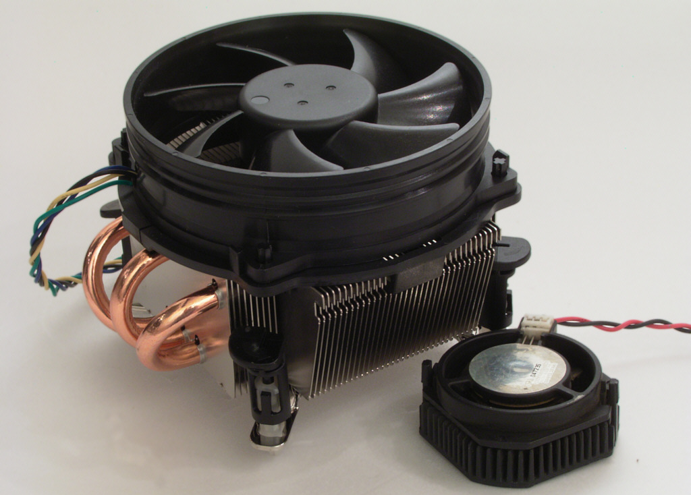

CHŁODZENIE
Co to w ogóle jest ? Chłodzenie procesora to proces odprowadzania ciepła z powierzchni procesora realizowany w celu umożliwienia jego normalnej pracy. Sam układ chłodzenia najczęściej składa się z elementu chłodzącego (radiatora) z
zamontowanym na nim wentylatorem, zasilanym z płyty głównej. Między procesor i element chłodzący nakłada się niewielką ilość pasty termoprzewodzącej w celu zmaksymalizowania powierzchni przewodzenia ciepła z procesora.
W konstrukcjach
od połowy lat 90. XX w. najczęściej spotyka się rozwiązania takie jak chłodzenie aktywne, rzadziej chłodzenie pasywne i chłodzenie cieczą. Współczesne procesory wydzielają duże ilości ciepła i dlatego wymagają intensywnego chłodzenia.
Chłodzenie aktywne zawiera wentylator wymuszający ruch powietrza w pobliżu powierzchni radiatora, ułatwiając odprowadzanie z niego ciepła. W starszych modelach płyt głównych wentylator miał stałą prędkość obrotową, w nowszych prędkość
obrotowa wentylatora jest regulowana automatycznie, zależnie od temperatury procesora, dzięki czemu, gdy komputer nie jest obciążony, wentylator pracuje z minimalną prędkością obrotową co przekłada się na jego cichą pracę. Automatyczna
regulacja prędkości pracy wentylatora zwykle odbywa się poprzez ciągłą zmianę napięcia zasilania (w przypadku złącza 3-stykowego) lub metodą impulsową PWM (w przypadku złącza 4-stykowego), Prędkość obrotowa wentylatora można także być
regulować manualnie, za pomocą regulatora obrotów lub z wykorzystaniem oprogramowania. Zatrzymanie lub brak wentylatora w układzie chłodzenia aktywnego w krótkim czasie powoduje przegrzanie procesora i, jeśli układ nie ma odpowiednich
zabezpieczeń (co miało miejsce w starszych procesorach lub płytach głównych), może dojść do jego uszkodzenia (tzw. spalenia).
Chłodzenie pasywne polega na odprowadzaniu ciepła tylko w wyniku konwekcji swobodnej powietrza wokół
radiatora i układu lub wymuszenia ruchu powietrza w wyniku pracy wentylatora komputera bez zastosowania wentylatora w układzie chłodzenia – układ taki wymaga wydajnego radiatora. W układach chłodzenia pasywnego najczęściej nie stosuje
się radiatorów miedzianych ze względu na ich niewystarczające możliwości w samoistnym oddawaniu ciepła.
Chłodzenie cieczą stosowane jest głównie przez overclockerów, dla których inne metody są za mało wydajne. Zespół chłodzenia
wodnego składa się z kilku elementów połączonych wężami, do których należą: blok wodny, chłodnica, pompka i rezerwuar (zbiornik wyrównawczy). Często stosuje się kompleksowe konstrukcje chłodzenia wodnego, które oprócz procesora chłodzą
także procesor graficzny, mostek północny i inne silnie grzejące się układy scalone.
Do chłodzenia procesora można również wykorzystać moduł Peltiera (rozwiązanie mało wydajne) lub inne rodzaje pomp ciepła, lecz jest to problematyczne ze względu na możliwość skraplania się wody z pary zawartej w powietrzu. Czasami
konstruowane są ekstremalne układy chłodzenia używające skroplonych gazów, jak np. ciekłego azotu, jednak, ze względu na trudny dostęp do potrzebnych elementów, wysokie koszty utrzymania i stosowanie niebezpiecznych materiałów, są one
rzadko spotykane i nie nadają się do długotrwałego i nienadzorowanego użytkowania.
zrodło: https://pl.wikipedia.org/wiki/Ch%C5%82odzenie_procesora